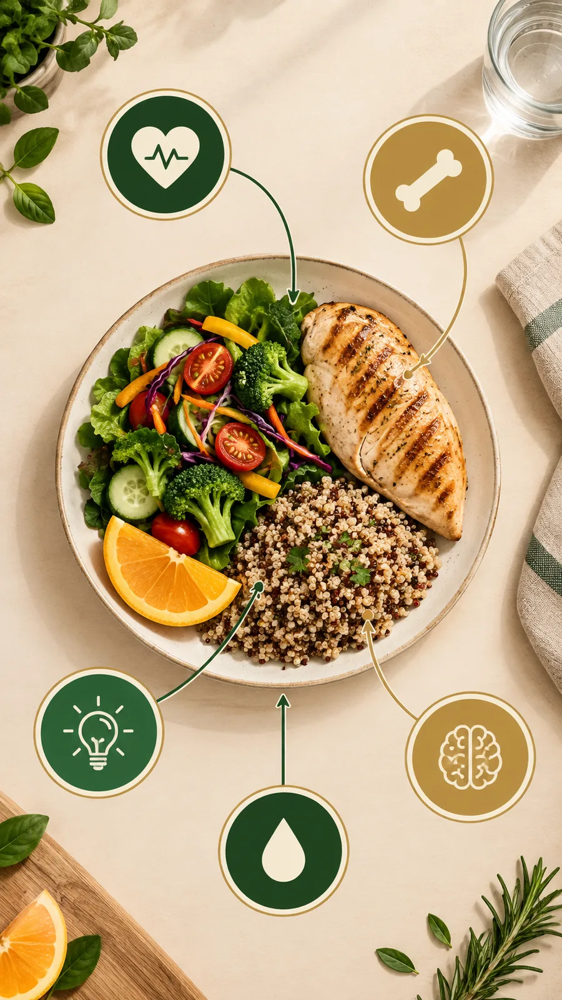

Alimentação simples para uma vida mais ativa
Comer bem depois dos 50 não é sobre dieta restritiva, é sobre ajustar o prato para o que o corpo mais precisa nesta fase: proteína, fibras, hidratação e algumas vitaminas-chave. Pequenos ajustes, feitos com frequência, valem mais do que qualquer regra rígida.
Depois dos 50, o corpo muda de exigências. O metabolismo desacelera, a massa muscular tende a diminuir naturalmente e a sensação de sede fica mais fraca — o que faz com que muita gente se desidrate sem perceber. Nada disso significa que comer bem ficou mais difícil. Significa apenas que vale a pena entender o que o prato precisa oferecer, e por quê.
Os pilares do prato depois dos 50
Não existe alimento milagroso, mas existem grupos que merecem atenção redobrada nesta fase da vida. O mapa abaixo mostra como eles se encaixam num prato comum, do dia a dia:

Carnes, ovos, feijão e quinoa ajudam a preservar a massa muscular e a força.
Fortalecem os ossos e ajudam a prevenir quedas e fraturas.
Presentes em grãos integrais, ajudam a converter alimento em energia.
A sensação de sede diminui com a idade — beber água com regularidade precisa virar hábito, não esperar a vontade.
Frutas, vegetais coloridos e boas gorduras ajudam a preservar a função cognitiva.
Fibras: a favor da digestão e da saciedade
Vegetais, frutas com casca, grãos integrais e leguminosas mantêm o intestino funcionando bem e ajudam a controlar a fome entre as refeições. É um dos ajustes mais simples de fazer: trocar o arroz branco pelo integral, deixar a casca da fruta, incluir uma salada antes do prato principal.
Como começar sem complicar
Não é preciso reformular a alimentação inteira de uma vez. Algumas trocas realistas já fazem diferença:
- Inclua uma fonte de proteína em cada refeição principal — carne, ovo, peixe, feijão ou queijo.
- Deixe uma garrafa de água visível durante o dia, em vez de esperar sentir sede.
- Prefira frutas inteiras a sucos — a fibra da fruta ajuda na digestão e na saciedade.
- Troque um alimento ultraprocessado por vez, sem pressa. A rotina se ajusta melhor com mudanças pequenas e constantes.
Comer bem depois dos 50 não precisa virar uma tarefa complicada. Precisa, principalmente, virar rotina — um prato equilibrado de cada vez, um copo de água por vez, sem cobrança e sem culpa.
Importante: este conteúdo é educativo e não substitui avaliação, diagnóstico ou acompanhamento profissional. Antes de mudar sua alimentação, especialmente se você tem alguma condição de saúde, converse com um médico ou nutricionista.